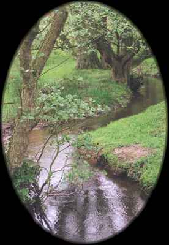
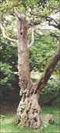
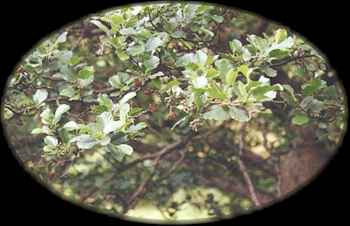
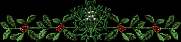
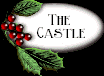

 Alder - The common alder (Alnus glutinosa (L.) Gaertner) is common along lowland rivers, where it grows with aspens, poplars, and  willows. Like willows, alders sprout from stumps. This allows them to regenerate after heavy flooding. In protect sites they may grow to 65 feet tall. Their leaves are more blunt-tipped than most North American alders, which look more like the grey alder (A. incana (L.) Moench). This species is more common in the mountains of Europe, and is not restricted to moist soils. Like ashes, European alders are not widely cultivated in North American (they are often sold as black alders), but several native species are. Alder wood is said to resist rotting when it is wet, and was the wood of choice for pilings in many regions. Alders are members of the Birch family (Betulaceae). Curtis Clark  |
|||
 |
|||